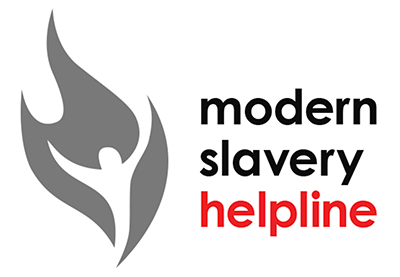

Modern slavery and human trafficking is happening every day across the United Kingdom, affecting thousands of men, women and children.
NHS England and NHS Improvement publish an annual Modern Slavery Human Trafficking statement, details of this can be found on our website.
Modern slavery encompasses:
This is further explained below:
There are many forms of slavery and trafficking including sexual exploitation, domestic servitude, criminal exploitation including county lines and forced labour. Industries that commonly exploit for labour include agriculture, warehouse and distribution, manufacturing and food.
Whilst the NHS has no ‘duty’ to notify in terms of potential victims, there is a clear duty to safeguard and referrals are being made to other agencies to facilitate this process.
If you suspect someone is being trafficked or a potential victim of Modern Slavery, contact a First Responder, such as the police (on 101), local authority.
If you, or someone you know is in immediate danger, you should call 999 and ask for police.
You can call the Modern Slavery Helpline on: 08000 121 700
The Helpline has trained Advisors who can help you by providing advice and sign posting you to a First Responder agency.
More information is available from the Modern Slavery Helpline website.
Modern Slavery Act 2015: Statutory guidance for England and Wales (2020)
NHS Rapid Read: COVID-19: Modern Slavery and Human Trafficking
RCN Pocket Guide on Modern Slavery and Trafficking
To understand more about the National Referral Mechanism and the role of the First Responder please see the Home Office free e-learning module.
Skills for Care Training Framework for Modern Slavery and Human Trafficking (launched in September 2020)